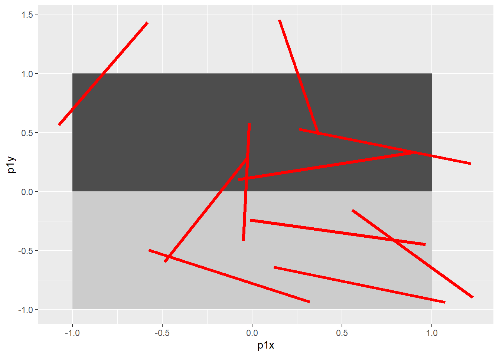
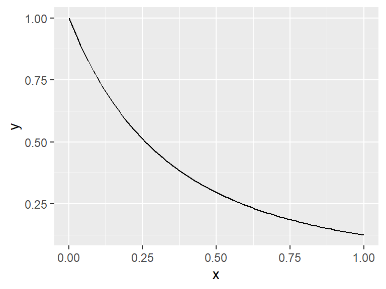
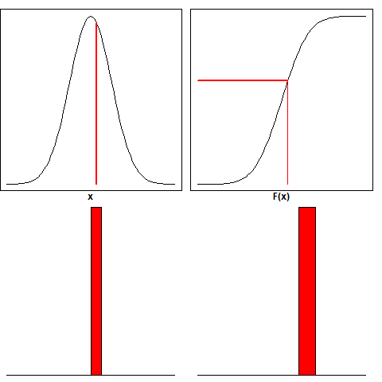
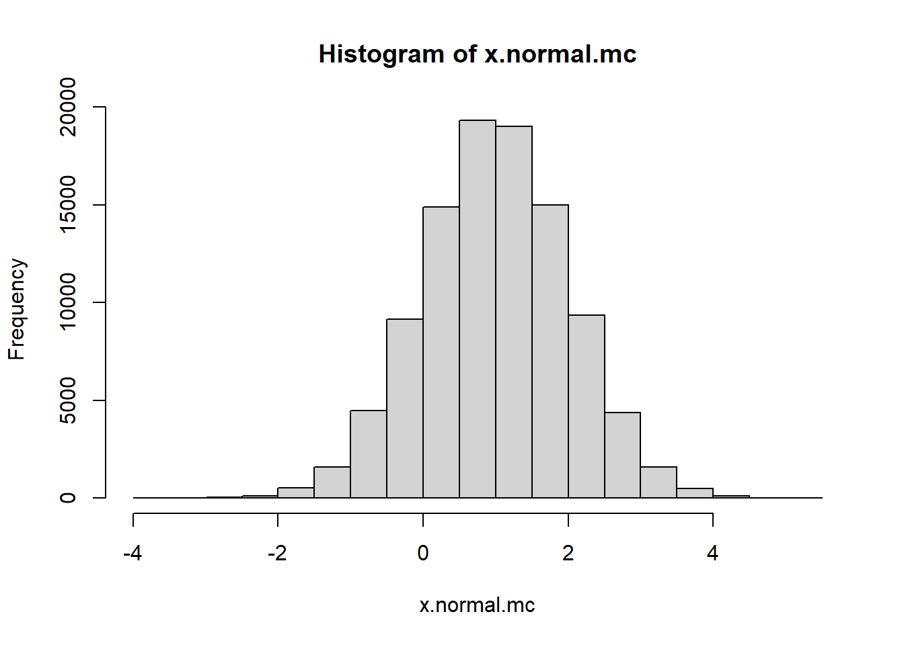
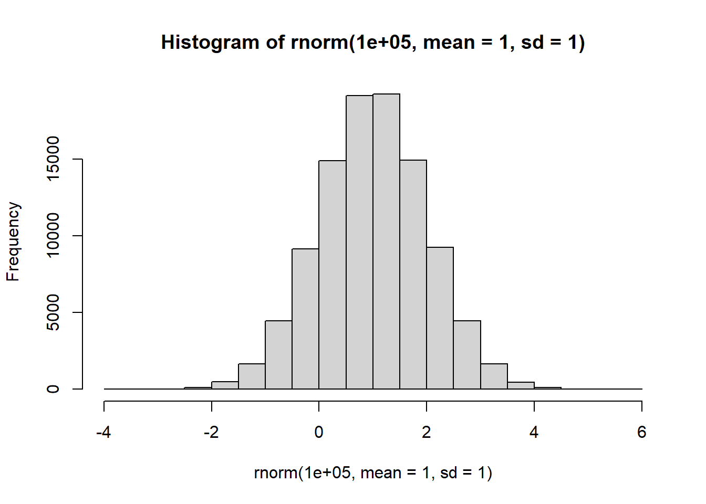
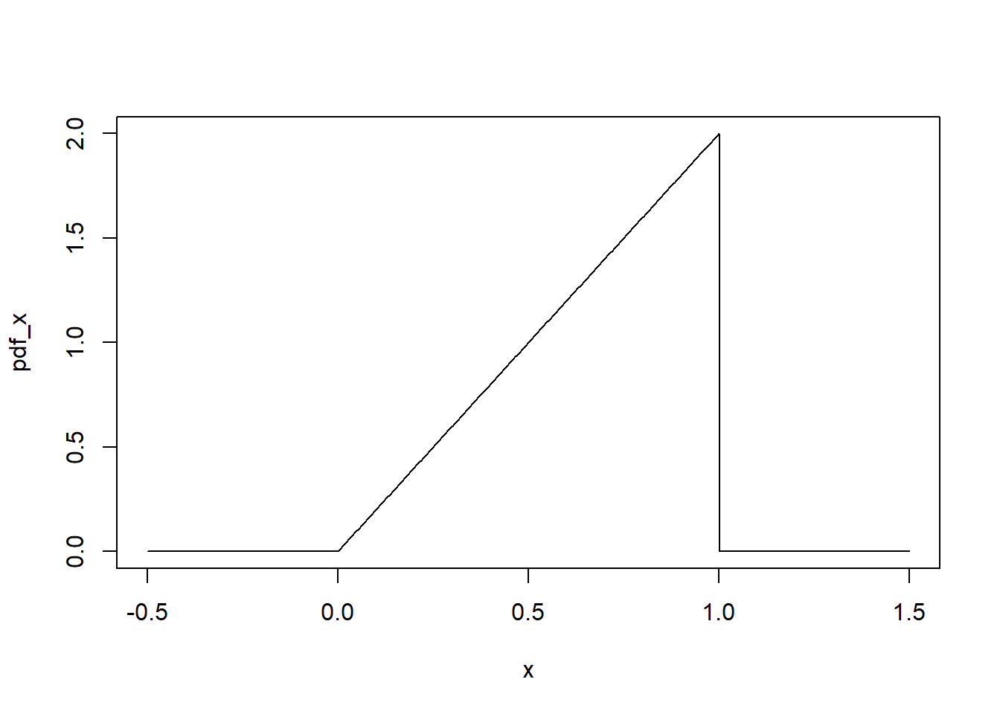
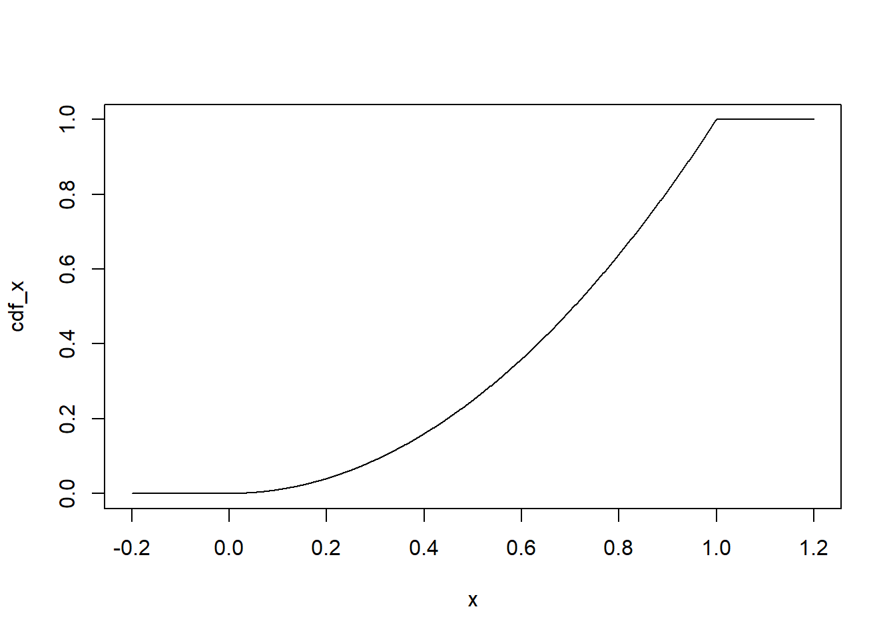
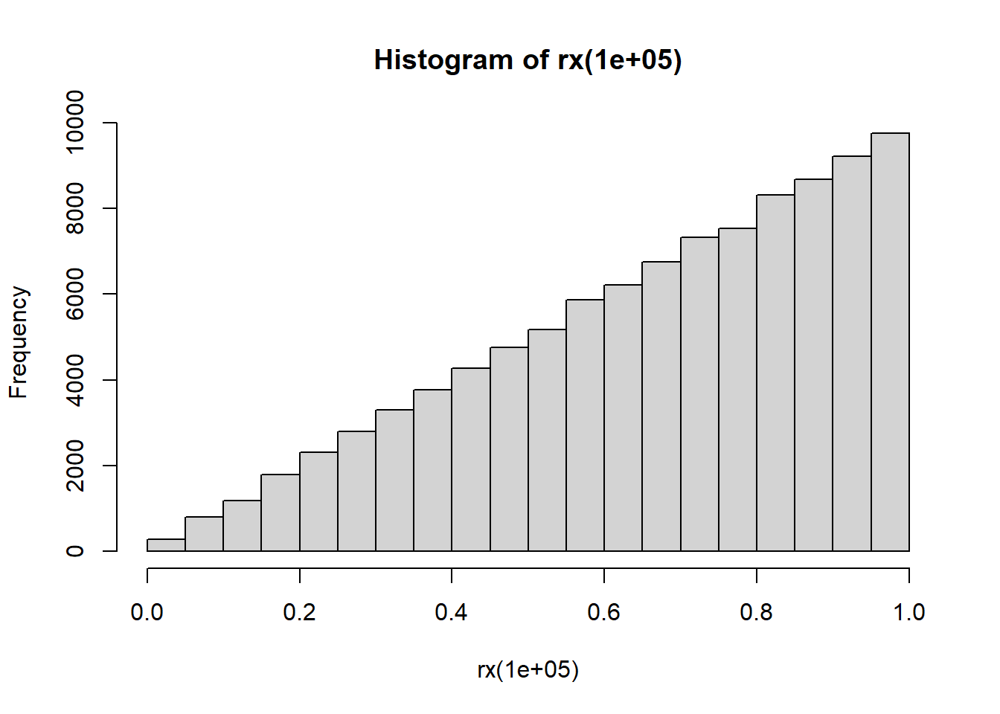

pnorm(3, mean=1, sd=sqrt(3)) - pnorm(0, mean=1, sd=sqrt(3))[1] 0.594042These notes discuss Monte Carlo methods, a class of simulation-based methods that seek to avoid complicated and/or intractable mathematical computations.
Suppose we need to compute an expectation \(\mathbb{E} g(Z)\) for some random variable \(Z\) and some function \(g : \mathbb{R} \rightarrow \mathbb{R}\). Monte Carlo methods avoid doing any integration or summation and instead just generate lots of copies of \(Z\), say \(Z_1,Z_2,\dots,Z_M\) and estimate \(\mathbb{E} f(Z)\) as \(M^{-1} \sum_{i=1}^M f(Z_i)\). The law of large numbers states that this sample mean should be close to \(\mathbb{E} f(Z)\).
Said another way, Monte Carlo replaces the work of computing an integral (i.e., an expectation) with the work of generating lots of random variables.
We will begin by explaining Monte Carlo in a few simple illustrative situations.
Then we will see how these same ideas can be applied in more complicated situations.
Monte Carlo and related “simulation-based” methods will arise again and again in this course (and in the rest of your career!), so it is worth your time to make sure you understand them well!
After this lesson, you will be able to
Stanisław Ulam was a famous nuclear physicist (fun fact: after fleeing Europe during WWII, Ulam was a professor at UW-Madison before he was recruited to work on the Manhattan project at Los Alamos).
Supposedly, while recovering from a surgery, Ulam was playing a lot of solitaire and came to wonder what was the probability \(p\) that a randomly-dealt game of solitaire could be played out.
He quickly found that calculating this probability precisely (e.g., by doing a bunch of the algebra and combinatorics that you may remember less than fondly from a probability course) was not very easy. The idea occurred to him that even if the probability \(p\) could not be calculated directly, it could be estimated by dealing lots of games of solitaire and counting how many of them he won.
Thus, Monte Carlo methods were born.
The name “Monte Carlo” is a reference to the Monte Carlo casino, later a frequent setting of James Bond movies. The idea is that like at a casino, Monte Carlo methods involve lots of randomness.
The basic idea behind Monte Carlo methods, then, is the following: suppose that we have an event \(E = \{ X \in S \}\) where \(S \subset \Omega\) is some set of outcomes and \(X\) is a random variable with outcome set \(\Omega\). Suppose that we want to know the probability of event \(E\), \(\Pr[E]\).
Of course, one option would be to draw on the ideas we saw last week. We could do an integral or sum (depending on whether \(X\) is continuous or discrete) and just calculate what this probability is.
Unfortunately, often this integral or sum is very hard to do, either because the integral/sum is very hard to solve (either exactly or numerically). When this happens, we need to take a different approach.
That is where Monte Carlo comes in. We give up on doing an integral or sum, and instead just use the fact that we can generate lots of random variables.
To (approximately) compute \(\Pr[ E ]\), we
Note: this \(1_{ \{ \cdots \} }\) notation is called an indicator function. For an event \(E\), \[ 1_{E} = \begin{cases} 1 &\mbox{ if } E~\text{ occurs } \\ 0 &\mbox{ otherwise. } \end{cases} \]
So, in other words, to estimate \(\Pr[ E ]\), Monte Carlo says that we just run our experiment of interest a bunch of times and count what proportion of the time the event \(E\) happens.
Let’s start by considering a calculation similar to one that we already did in a previous lecture. Let \(X\) be a normal random variable with mean \(1\) and variance \(3\). What is the probability that \(0 \le X \le 3\)?
Well, we already know how to compute this. It’s given by the integral \[ \Pr[ 0 \le X \le 3] = \int_0^3 \frac{1}{\sqrt{2\pi * 3}} \exp\left\{ \frac{ -(t-1)^2 }{ 2* 3} \right\} d t \]
where we have taken the normal density and plugged in \(\mu = 1, \sigma^2=3\).
Note that this integral actually doesn’t have a closed form– your calculus classes might have tricked you into thinking that most integrals are “nice”. Still, we can use pnorm to compute it numerically (i.e., approximately), and we find that this probability is
pnorm(3, mean=1, sd=sqrt(3)) - pnorm(0, mean=1, sd=sqrt(3))[1] 0.594042Note that we have specified the standard deviation to be \(\sqrt{3}\)– the variance is \(\sigma^2 = 3\), so standard deviation is \(\sigma = \sqrt{3}\).
Let’s suppose, however, that we didn’t know this probability and that it wasn’t so easy to compute in R. Note that Monte Carlo is most useful when we don’t have things like pnorm at our disposal, so this is a setting where in real life we wouldn’t ever use Monte Carlo. We’re starting in this nice simple familiar setting as a warm-up.
Our event of interest is \(E = \{ 0 \le X \le 3 \}\). Monte Carlo says that to estimate \(\Pr[ E ]\), we repeat our experiment lots of times and count what fraction of the time the event \(E\) happens.
So we should generate lots of copies of \(X \sim \mathcal{N}(\mu=1,\sigma^2=3)\) and count how often \(0 \le X \le 3\). Let’s do just that.
# Write a function that checks whether or not our event E happens
# The argument x is the output of our experiment.
# (i.e., a draw from the normal)
event_E_happened <- function( x ) {
if( 0 <= x & x <= 3 ) {
return( TRUE ) # The event happened
} else {
return( FALSE ) # The event DIDN'T happen
}
}
# Now MC says that we should generate lots of copies of X...
NMC <- 1000; # 1000 seems like "a lot".
results <- rep( 0, NMC ); # We're going to record outcomes here.
for( i in 1:NMC) {
# Generate a draw from the normal, and then...
X <- rnorm( 1, mean=1, sd=sqrt(3) );
# ...record whether or not our event of interest happened.
results[i] <- event_E_happened(X);
}
# Now, compute what fraction of our trials were "successes" (i.e., E happened)
sum( results )/NMC[1] 0.626Just as a reminder, the true number, which we just happen to know in this case, is
pnorm( 3, mean=1, sd=sqrt(3) ) - pnorm( 0, mean=1, sd=sqrt(3) )[1] 0.594042Now, our estimate is random, so every time we recompile this document it will be a bit different, but the estimate should be between 0.56 and 0.63.
We can make the estimate still more accurate by increasing the number of MC replicates \(M\)– larger \(M\) will make the estimation error smaller, on average. We’ll be able to make that description more precise later.
Here’s a classic probability question: In a group of \(n\) people, what is the probability that two or more of them have the same birthday? For simplicity, we’ll assume that there are no leap days (i.e., the year has 365 days) and that all 365 days are equally likely birthdays. You’ll implement a solution to a more general version of this problem in your homework, but let’s get an intuition here.
We need to simulate assigning \(n\) people to birthdays. We will represent the days of the year by the numbers 1 through 365, so assigning a birthday just amounts to choosing one of these 365 numbers at random. Then we need to check whether or not there are any repeated birthdays.
gen_birthdays <- function( n ) {
# Generate n random birthdays.
# Generating a random birthday just corresponds to choosing a random number
# between 1 and 365 inclusive.
# Pick uniformly at random from {1,2,3,...,365}.
# We sample WITH replacement,
# because it is possible for a birthday to be repeated.
# See ?sample for details
return( sample( 365, size=n, replace=TRUE ) );
}
# One run of our experiment will consist of generating n birthdays,
# and then checking whether or not the birthdays contain a repeat.
# Return TRUE if more than one person shares a birthday,
# FALSE otherwise.
run_bday_expt <- function( n ) {
# Generate n birthdays
bdays <- gen_birthdays( n );
# Now, check if there is a repeat.
# There are lots of ways to do this in R.
# Let's use the table function, which takes a vector and returns a
# vector of counts. # See ?table for details
# The important thing for us is that:
# If every entry of bdays appears exactly once,
# then table(bdays) will just be a vector of ones.
# If one or more entries in the vector bdays is repeated,
# then table(bdays) will have one or more entries that are larger than 1.
# So we can examine max( table(bdays) ).
# max( table(bdays)) > 1 if and only if there is a repeated entry in bdays.
return( max(table(bdays)) > 1 );
}Now let’s pick a value for the number of people \(n\) and repeat our experiment a bunch of times, keeping track of how often it returns TRUE (i.e., there is a repeated birthday).
n <- 22;
NMC <- 1000;
NTRUE <- 0;
for( i in 1:NMC) {
if( run_bday_expt(n) ) {
NTRUE <- NTRUE + 1;
}
}
pbday_estimated <- NTRUE/NMC
pbday_estimated[1] 0.461Once again, this is a situation where we can actually compute an answer exactly– we are using this to build intuition, not because it is a problem that strictly speaking requires Monte Carlo methods.
The probability that one or more birthdays is repeated is one minus the probability that all \(n\) birthdays are distinct. \[ p_{\text{repeated}} = 1 - p_{\text{distinct}}. \]
The probability that all \(n\) birthdays are distinct is
\[ p_{\text{distinct}} = \frac{365}{365}*\frac{364}{365} * \frac{ 363 }{ 365 } * \cdots * \frac{ 365-n+1}{365} = \frac{ 365! }{ (365-n)! 365^n }. \]
If you’ve taken a probability class before, this computation will be simple and familiar. If you haven’t taken a probability class before, this warrants some unpacking.
I’ll do that unpacking here in these notes, but we won’t go into detail about this in lecture, owing to time constraints.
We want to compute the probability that all \(n\) birthdays are distinct. Let’s label these people \(1,2,3,\dots,n\), and consider generating their birthdays in order.
The way we usually compute probabilities in problems like this is to count how many different outcomes there are, and then look at how many of those outcomes match our event of interest. That is, we compute a probability as \[ N_{\text{event is true}} / N_{\text{outcomes}} , \]
where \(N_{\text{outcomes}}\) is the total number of possible outcomes and \(N_{\text{event is true}}\) is the number of possible outcomes where our event of interest is true.
In this case, the outcomes are assignments of \(n\) people to 365 birthdays. Each of those \(n\) people can be assigned to one of 365 birthdays, so \[ N_{\text{outcomes}} = 365^n. \]
Now, to compute the numerator in our probability, let’s count how many ways we can assign \(n\) people to \(n\) unique birthdays out of 365 available birthdays.
The first birthday is unique no matter what: for any of the 365 birthdays we pick, there are no other birthdays for it to “duplicate”.
Now, let’s consider the 2nd birthday. The first person’s birthday is off limits, so that leaves 364 remaining birthdays to choose from, so there are \(365*364\) ways to choose distinct birthdays for the first two people.
Now, consider the third person. If the first and second person have distinct birthdays, there are \(365-2 = 363\) birthdays left to choose from. There are \(365*364\) ways to pick distinct birthdays for the first two people, and so there are \(365*364*363\) ways to choose distinct birthdays for the first three people.
Continuing this argument up to the \(n\)-th person, if the first \(n-1\) people all have distinct birthdays, then there are \(365-(n-1) = 365 - n + 1\) birthdays remaining for the \(n\)-th person to choose from that would maintain the distinct birthdays property. So there are \(365*364*363*\cdots*(365-n+1)\) ways to choose distinct birthdays for all \(n\) people.
Of course, this argument only makes sense if \(1 \le n \le 365\), an assumption we were making implicitly, but worth making explicit here.
So, plugging this back into our numerator, we have determined that the probability that our \(n\) people are assigned distinct birthdays is
\[ \frac{365*364*363*\cdots*(365-n+1) }{ 365^n} = \frac{ 365! }{ (365-n)! } \frac{1}{365^n }, \]
where we have used the fact that \(m*(m-1)*\cdots*(m-k+1) = m!/(m-k)!\) for non-negative integers \(k\) and \(m\) with \(k \le m\).
Thus, the probability of a repeated birthday is
\[ p_{\text{repeated}} = 1 - p_{\text{distinct}} = \frac{ (365-n)! 365^n - 365! }{ (365-n)! 365^n }. \] Let’s implement that as a function and get the true values to verify our MC estimates.
p_repeated <- function( n ) {
# Compute p_distinct, first, then subtract it from 1.
numer <- prod( seq(365,365-n+1) );
denom <- 365**n;
p_distinct <- numer/denom;
return( 1 - p_distinct);
}
p_repeated( 23 )[1] 0.5072972p_repeated( 22 )[1] 0.4756953Just as a reminder, our estimate for p_repeated( 22 ) was
pbday_estimated[1] 0.461Not bad!
Okay, before we start looking at more complicated or more interesting examples of Monte Carlo, we have to ask… why does this work, anyway? We’re estimating a number \(\Pr[E]\) by just repeating an experiment a bunch of times and recording the fraction of the time that our event \(E\) happened…
Well, in one sense, the fact that this gets us a good estimate of \(\Pr[E]\) should be “obvious”. Our “definition” of a probability is as a long-run average– the probability of an event is the proportion of the time we would expect that event to happen if we repeated the experiment many times. So it comes as no surprise that when we run our experiment a bunch of times and average out how often our event happens, well… we get our probability!
Okay, but that explanation feels a bit circular… To answer the question more carefully, we need to use just a bit of math. I promise it’s just a bit, and we’ll go through it step by step. We won’t even have to compute any integrals– just look at them!
To start with, let’s imagine that our variable of interest \(X\) is continuous with density function \(f_X(t)\). The same argument will apply for discrete RVs; just change integrals to sums. Then with \(E = \{ X \in S \}\) for any set \(S \subseteq \Omega\), \[ \Pr[ E ] = \int_S f_X(t) dt = \int_\Omega 1_{t \in S} ~f_X(t) dt \]
The first equality there is just our definition of probability– to get the probability of an event, we integrate a density over the event set.
The second equality is just rewriting the integral. Instead of only integrating over \(S\), we integrate over the whole set \(\Omega\) and add in an indicator \(1_{t \in S}\). Remember, this function is \(1\) when \(t \in S\) and \(0\) otherwise.
But now, let’s recall the definition of expectation. For a function \(g(X)\), \[ \mathbb{E} g(X) = \int_\Omega g(t) f_X(t) dt \]
We say that we have “integrated \(g\) against the density \(f_X\)”. Plugging in \(g(t) = 1_{t \in S}\), \[ \mathbb{E} 1_{X \in S} = \int_\Omega 1_{t \in S} ~f_X(t) dt. \]
But we showed a few equations ago that this integral on the right-hand side is \(\Pr[ E ]\).
So we have shown that \(\Pr[E] = \mathbb{E} 1_{X \in S}\).
Okay, we’re almost there. We have shown that the probability we want to estimate, \(\Pr[ E ]\), is really just equal to an expectation, \(\mathbb{E} 1_{X \in S}\).
Now, let’s think back to the law of large numbers. If we generate lots of independent copies of a random variable \(X\), say \(X_1,X_2,\dots,X_M\), and look at the average \(M^{-1} \sum_{i=1}^M g(X_i)\), then for large \(M\), this average is close to the expectation \(\mathbb{E} g(X)\): \[ \frac{1}{M} \sum_{i=1}^M g(X_i) \approx \mathbb{E} g(X) \] Let’s again take \(g(t) = 1_{t \in S}\). Then \[ \frac{1}{M} \sum_{i=1}^M 1_{X_i \in S} \approx \mathbb{E} 1_{X \in S} = \Pr[ E ]. \]
Monte Carlo works for estimating probabilities because probabilities are just expectations (that’s from the calculus we did above), and sample averages are close to their expectations (by the law of large numbers)!
Let’s look at a slightly more interesting example, based on a question first asked by Georges-Louis Leclerc, Comte de Buffon in the 1700s:
Suppose we have a floor made of parallel strips of wood, each of width 1, and we drop a needle of length 1 onto the floor. What is the probability that the needle will lie across a line between two strips?
Now, even beginning to answer this question requires that we specify what we have in mind when we say that we drop a needle onto the floor. That is, we need to specify our probabilistic/statistical model of the experiment of dropping a needle on the floor.
Presumably we mean that the needle lands at a random point on the floor and that its orientation (i.e., angle that the needle makes with the cracks between the floor boards) is uniformly random.
These are the kinds of assumptions that we always want to be aware of when we build a model of the world, and these kinds of specifications can make a big difference in terms of the answers that we get. A nice example of this is Bertrand’s paradox, presented beautifully in this YouTube video by the always wonderful Numberphile and 3blue1brown.
So let’s specify what we mean, here.
Let’s consider a 2-by-2 square with corners at \((\pm1,\pm1)\) and divide it into 2 halves: the top half is one strip of wood, and the bottom half is another strip of wood.
require(ggplot2)
pp <- ggplot() + geom_rect(aes(xmin=-1,xmax=1,ymin=0,ymax=1),
fill="grey30", color=NA);
pp <- pp + geom_rect(aes(xmin=-1,xmax=1,ymin=-1,ymax=0),
fill="grey80",color=NA);
pp <- pp + scale_x_continuous(expand=c(0,0)) + scale_y_continuous(expand=c(0,0))
pp
To model our randomly dropped pin, we first sample a point in this square uniformly at random. We will imagine that the pin is just a line, and this sampled point will be the location that the middle of the pin lands on. Then we randomly pick an angle uniformly over \([0,\pi)\) and extend the ends of the needle each 0.5 units of length, for a needle of length \(1\). Finally, we check if the needle crosses any of the lines \(y=0,\pm1\).
Let’s write that function and plot a few random needles to make sure it’s doing what we want.
# define needle dropping function
needle = function(){
# Randomly pick the location of the center of the needle.
# We need an x and y coordinate, hence n=2 in runif
# This means that xy is a length-two vector,
# kind of like we wrote c( xcoord, ycoord ).
# This will come up below when we compute the endpoints of our
# needle, p1 and p2, below.
xy = runif(n=2, min=-1, max=1)
# randomly pick an angle uniformly between 0 and pi.
angle = runif(n=1, min=0, max=pi)
# calculate delta x and delta y, the distance of the ends of
# the needle from center in the horizontal and vertical directions.
# We are defining the angle using the standard definition
# (going counterclockwise from positive x axis).
# We will use these numbers to compute the coordinates of the needle's
# endpoints below,
dx = 0.5*cos(angle);
dy = 0.5*sin(angle);
# Calculate coordinates of the needle's end points
# Our dy is always positive, so p1 is always higher than p2.
# This will be useful later for checking if our needle crosses a line
p1 = setNames(xy + c(dx,dy), c("p1x","p1y"))
p2 = setNames(xy - c(dx,dy), c("p2x","p2y"))
# Note: setNames is explained where we use it below
# in the function `crosses()` in the next code block.
# return endpoints
return(c(p1,p2))
}
# plot a few needle drops
library(plyr)Warning: package 'plyr' was built under R version 4.2.3ndl = function(i) needle()
# needle() takes no arguments, but we want to call it 10 times,
# so ldply needs a dummy variable,
# which we've called (totally arbitrarily) i.
needles = ldply(1:10,ndl);
# First plot out board again.
pp <-ggplot() + geom_rect(aes(xmin=-1,xmax=1,ymin=0,ymax=1),
fill="grey30",color=NA);
pp <- pp + geom_rect(aes(xmin=-1,xmax=1,ymin=-1,ymax=0),
fill="grey80",color=NA);
# Now, add in the needles, in red.
pp <- pp + geom_segment(data=needles,
mapping=aes(x=p1x,y=p1y,xend=p2x,yend=p2y),
color="red",size=1.5);Warning: Using `size` aesthetic for lines was deprecated in ggplot2 3.4.0.
ℹ Please use `linewidth` instead.pp
Now, Monte Carlo says that we need to repeat this experiment many times (i.e., many more than 10 needles) and count how many of our dropped needles cross a line. So first and foremost we need a function to check if a needle crosses a line.
crosses <- function( pts ) {
# Remember that needle() returns a pair of (x,y) points, p1,p2.
# We only need the y-coordinates to check if they cross a line.
p1y = pts['p1y'] # Note: this indexing trick is why we used setNames above
p2y = pts['p2y']
# check if p1 and p2 are on opposite sides of a line
# We do this by simply checking if the y-coordinates are on different sides
# of one of the three lines y=-1, y=0 or y=1.
if( (p1y > -1 & p2y < -1) || (p1y > 0 & p2y < 0) || (p1y > 1 & p2y < 1) ){
return( TRUE );
} else {
return( FALSE );
}
}Great. So let’s generate lots of random needles, and use our new function crosses to check which ones cross a crack in the floorboards.
# set size
NMC = 1e5; # 10K MC replicates. Crank this number up for better accuracy.
# create vector to count crossings
crossings = 0
# run function
for(i in 1:NMC){
# drop a needle
points = needle()
# Check if it crosses and update counts accordingly.
if( crosses( points ) ) {
crossings <- crossings + 1;
}
}Now, our estimate of the probability of a crossing is just the fraction of our dropped needles (i.e., Monte Carlo replicates) that crossed.
crossings/NMC[1] 0.63582We can compare with the correct answer and see how close we are. The actual probability, \(2/\pi\) can be obtained using calculus (see the Wikipedia page for a derivation).
true.cross = 2/pi
MC.cross <- crossings/NMC
cat( sprintf(" true value: %.5f \n our value: %.5f \n Percent relative error: %.3f%%", true.cross, MC.cross, 100*abs(true.cross-MC.cross)/true.cross ) ) true value: 0.63662
our value: 0.63582
Percent relative error: 0.126%Exercise: Write a function that takes 3 arguments: L for the length of the needle, T for the width of the floor boards, and M for the number of Monte Carlo replicates; performs the above Monte Carlo simulation; and returns the (estimated) probability of a crossing. Refer to the Wikipedia page on Buffon’s needle for the probability of crossing for a needle length \(L\) and board width \(T\).
The power of Monte Carlo methods goes way beyond estimating the probabilities of events. Monte Carlo refers to a much broader class of methods– using simulation to answer questions that would otherwise be hard or impossible to answer just using math (i.e., problems that do not have closed-form solutions).
We just saw above that we can use Monte Carlo to estimate probabilities of the form \(\Pr[ E ]\) by approximating expectations of the form \(\mathbb{E} 1_E\).
Well, what is to stop us from replacing that indicator with a more interesting function \(g(X)\)? For example, suppose that \(X\) is normal with mean \(\mu\) and variance \(\sigma^2\) and we want to compute \(\mathbb{E} \log |X|\). We could set up and solve the integral \[ \mathbb{E} \log |X| = \int_{-\infty}^\infty \left( \log |t| \right) f( t; \mu, \sigma) dt = \int_{-\infty}^\infty \frac{ \log |t| }{ \sqrt{2\pi \sigma^2} } \exp\left\{ \frac{ -(t-\mu)^2 }{ 2\sigma^2 } \right\} dt. \]
Alternatively, we could just draw lots of Monte Carlo replicates \(X_1,X_2,\dots,X_M\) from a normal with mean \(\mu\) and variance \(\sigma^2\), and look at the sample mean \(M^{-1} \sum_{i=1}^M \log |X_i|\), once again appealing to the law of large numbers to ensure that this sample mean is close to its expectation.
Exercise: Do that! Write code to obtain a Monte Carlo estimate of \(\mathbb{E} \log |X|\) for \(X \sim \mathcal{N}(\mu, \sigma^2 )\) (choose values for \(\mu\) and \(\sigma^2\) as you like).
Indeed, this idea can be pushed still further. Suppose that we want to compute an integral \[ \int_D g(x) dx, \]
where \(D\) is some domain of integration and \(g\) is a function. Let \(f(x)\) be the density of some random variable with \(f(x) > 0\) for all \(x \in D\) and \(f(x) = 0\) for \(x \not \in D\). In other words, \(f\) is the density of a random variable supported on \(D\). Then we can rewrite the integral as \[ \int_D g(x) dx = \int_D \frac{ g(x) }{ f(x) } f(x) dx. \]
Defining \(h(x) = g(x)/f(x)\), what we have really shown is that \[ \int_D g(x) dx = \mathbb{E} h(X), \]
where \(X\) is a random variable with density \(f\).
So if we want to (approximately) compute \(\int_D g(x) dx\), we can just generate lots of copies of \(X\) with density \(f\), and compute \(M^{-1} \sum_{i=1}^M h(X_i)\). This is why you’ll sometimes see Monte Carlo methods referred to as “integration by darts”!
library(ggplot2)
f = function(x) (x+1)^-3
ggplot() + geom_function(fun=f)
We know from calculus \(\int_0^\infty (x+1)^{-3}\text{dx}=\left.-\frac1{2(x+1)^2}\right\vert_0^\infty=\frac12\).
Suppose we want to find this approximately using an MC approach. Let \(g(x)=(x+1)^{-3}\). We need a random variable defined from 0 to \(\infty\). Let’s choose \(X=\text{Exponential}(\lambda=1)\) with density \(f(x)=e^{-x}\).
Then we can find \(h(x)=g(x)/f(x)=(x+1)^{-3}\,\cdot\,e^x\). Now, we just need to find \(E(h(X))\), which we can do by drawing a sample \(X_i\) using rexp(...) and finding \(\frac1n\sum_{i=1}^n h(X_i)\).
n = 1e6
# draw a sampe of Xi
x = rexp(n, rate = 1)
# find the sample mean of h(Xi)
mean((x+1)^-3 / exp(-x))[1] 0.4985974Note that we can pick any \(X\) that is only defined over \([0,\infty)\), as long as we know its PDF \(f(x)\).
Suppose instead we had picked \(X\) as \(|Z|\), i.e. as the absolute value of a standard normal. It’s easy to see by symmetry \(f(x) = 2\,\cdot\texttt{dnorm(x,mean=0,sd=1)}\). We can then also compute it as this:
n = 1e6
# draw a sample of Xi
x = abs(rnorm(n, mean=0, sd=1))
# find the sample mean of h(Xi)
mean((x+1)^-3 / (2*dnorm(x, mean=0, sd=1)))[1] 0.4964237And we again get approximately the right answer 0.5 as expected.
Here’s a fun example. Of course, we all know the value of \(\pi\) (at least to a few decimal points). But let’s suppose we didn’t know \(\pi\), for the sake of argument. We do know that \(\pi\) is the ratio of the area of a circle to radius².
How can we use this fact, in conjunction with Monte Carlo methods, to estimate \(\pi\)?
Well, let’s have a look at the diagram below, which shows a square of side length 2, with an inscribed circle of radius 1 (hence area \(\pi\)). Some random points have been chosen in the square, and colored according to whether or not they lie inside the circle.

Suppose that we pick a point uniformly at random in this two-by-two square. What is the probability that the point lies inside of the circle? Well, the circle has area \(\pi\) and the square has area \(4\), so the probability is \(p_{\text{in}} = \pi/4\).
This means we can estimate \(\pi\) as \(4 * p_{\text{in}}\). So one way to estimate \(\pi\) would be to estimate \(p_{\text{in}}\) using Monte Carlo methods and then multiply by \(4\).
We can formalize this using the following setup:
Drop \(N\) points uniformly and independently in the square. We know each point has probability \(\frac\pi4\) of being in the circle. Let \(X_i\) be \(1\) if the \(i\)-th point is in the circle and \(0\) if it is not. Note that \(X_i\sim\text{Bernoulli}(p=\frac\pi4)\)
We know then that \(p_{\text{in}}=E[X_i]\approx\bar X=\frac1N\sum_{i=1}^NX_i\). Thus, our estimator can be represented as
\[\hat\pi:=4*p_\text{in}\approx4*\frac1N\sum_{i=1}^NX_i\]
Let’s try this.
NMC <- 1000; # Number of Monte Carlo replicates
in_circ <- 0; # Count how many points landed in the circle
# For-loop over the MC replicates
for(i in 1:NMC){
# for each point, generate 2 coordinates (x,y) randomly between -1 and 1
point <- runif(n=2, min=-1, max=1);
# to be inside circle, our point must satisfy x^2 + y^2 <= 1
if(point[1]^2 + point[2]^2 <= 1){
# if inside, add to count
in_circ <- in_circ+1
}
}
# To get proportion of square covered, take in_circ/N
prop <- in_circ/NMC
# to get our estimate of pi, multiply by 4.
pi.mc <- 4*propNow, let’s assess how good our estimate is by computing its relative error, i.e., the size of the error compared to the size of the thing we are trying to estimate. Note that this is a number we can compute only because we are in a situation where we know the correct answer. Of course, in more realistic settings, we don’t know the true value of the quantity we are trying to approximate.
# what are our estimate and percentage error?
# See ?sprintf for more information on creating formatted strings in R.
cat(sprintf("estimate: %.4f\n %% error: %.2f%%",pi.mc,100*abs(pi.mc-pi)/pi))estimate: 3.1240
% error: 0.56%Bonus: try changing NMC in the code above. How does the relative error change? What happens if you increase NMC up to 10000? What if you decrease NMC down to 100?
We can easily derive the expectation and variance of this estimator: \[\begin{align} E(\hat\pi)&=E\left(\frac4N\sum_{i=1}^NX_i\right)\\ &=\frac4NE\left(\sum_{i=1}^NX_i\right)\\ &=\frac4N\sum_{i=1}^NE(X_i)\\ &=\frac4N\sum_{i=1}^N\left[(1)(\tfrac\pi4)+(0)(1-\tfrac\pi4)\right]\\ &=\frac4N\sum_{i=1}^N\frac\pi4\\ &=\frac4N\left(N*\frac\pi4\right)\\ &=\pi \end{align}\]
\[\begin{align} Var(\hat\pi)&=Var\left(\frac4N\sum_{i=1}^NX_i\right)\\ &=\left(\frac4N\right)^2Var\left(\sum_{i=1}^NX_i\right)\\ &=\frac{16}{N^2}\sum_{i=1}^NVar(X_i)\\ &=\frac{16}{N^2}\sum_{i=1}^N\left[(1-\tfrac\pi4)^2(\tfrac\pi4)+(0-\tfrac\pi4)^2(1-\tfrac\pi4)\right]\\ &=\frac{16}{N^2}\sum_{i=1}^N\frac\pi4\left(1-\frac\pi4\right)\\ &=\frac{16}{N^2}\left(N*\frac\pi4\left(1-\frac\pi4\right)\right)\\ &=\frac{\pi(4-\pi)}N \end{align}\]
bonus exercise: derive same equations for \(E\) and \(Var\) by treating \(\sum X_i\) as a binomial variable and applying the binomial RV equations for \(E\) and \(Var\).
We can easily verify the truth of these formulae by simulating multiple “runs” of this experiment and looking at the distribution of estimates we obtain.
# choose M (number of times to repeat MC experiment)
M = 1000
# create vector to save results in
mc.est = rep(NA,M)
# for each experiment, do all the steps done before, get an estimate, and save it
for(j in 1:M){
# these lines are copied exactly from above
N = 1000
in.circ = 0
for(i in 1:N){
point = runif(n=2, min=-1, max=1)
if(point[1]^2 + point[2]^2 < 1){
in.circ = in.circ+1
}
}
prop = in.circ/N
pi.mc = prop * 4
# save result in vector
mc.est[j] = pi.mc
}# what do the estimates look like? print the first 100 values
options(max.print=100)
mc.est [1] 3.156 3.112 3.216 3.228 3.228 3.212 3.224 3.084 3.088 3.140 3.136 3.264
[13] 3.112 3.156 3.020 3.184 3.100 3.204 3.080 3.104 3.120 3.072 3.076 3.084
[25] 3.160 3.168 3.088 3.116 3.276 3.148 3.092 3.140 3.228 3.168 3.112 3.136
[37] 3.072 3.168 3.160 3.160 3.096 3.148 3.136 3.212 3.040 3.068 3.176 3.212
[49] 3.096 3.144 3.124 3.196 3.164 3.188 3.120 3.088 3.116 3.168 3.152 3.028
[61] 3.088 3.064 3.132 3.196 3.172 3.188 3.160 3.144 3.116 3.168 3.196 3.224
[73] 3.136 3.220 3.124 3.096 3.160 3.136 3.192 3.224 3.220 3.176 3.104 3.152
[85] 3.172 3.060 3.212 3.184 3.240 3.196 3.140 3.100 3.076 3.196 3.080 3.120
[97] 3.164 3.192 3.148 3.060
[ reached getOption("max.print") -- omitted 900 entries ]mean(mc.est)[1] 3.14024var(mc.est)[1] 0.002513464var.theory = pi*(4-pi)/N
var.theory[1] 0.002696766# deviation of our mean and variance from theory:
cat(sprintf("%% deviation from E : %.3f%% \n%% deviation from Var: %.3f%%",
abs(mean(mc.est)-pi)/pi*100,abs(var(mc.est)-var.theory)/var.theory*100))% deviation from E : 0.043%
% deviation from Var: 6.797%We can also represent this in the following alternate setup.
Consider a sample \(X_i,Y_i\) where all \(X_i\) and \(Y_i\) are i.i.d. drawn from \(\text{Uniform}(-1,1)\). Then, \((X_i,Y_i)\) can represent picking the \(i\)_th point uniformly in the square. Then, define the indicator function \(1_\bigcirc(x,y)\) which gives \(1\) if \((x,y)\) is in the circle and \(0\) otherwise, i.e.
\[1_\bigcirc(x,y)=\begin{cases}1 & x^2+y^2\le1^2 \\ 0 & \text{otherwise}\end{cases}\]
Now, from calculus we know the area of a region \(D\) can be represented as the integral \(\iint_D\text{dxdy}\), thus we have
\[\pi=\text{circle area} = \iint_\bigcirc\text{dxdy}=\iint_\square1_\bigcirc(x,y)\text{ dxdy}=\iint_\square\frac{1_\bigcirc(x,y)}{f(x,y)}\cdot f(x,y)\text{ dxdy}=E[h(X,Y)]\]
where \(h(x,y)=\frac{1_\bigcirc(x,y)}{f(x,y)}\), and \(f(x,y)\) is the “joint density” of \(X,Y\) over the square, which is basically the 2D version of a PDF for a coordinate \((X,Y)\). It’s easy to show for this example \(f(x,y) = \frac14\). Then,
\[E[h(X,Y)]=E\left[\frac{1_\bigcirc(X,Y)}{1/4}\right]=4\,\cdot E[1_\bigcirc(x,y)]\approx4\,\cdot\,\frac1N\sum_{i=1}^N1_\bigcirc(X_i,Y_i)\]
Crucial to Monte Carlo methods is that we be able to generate random variables. For example, if we want to estimate \(\mathbb{E} g(X)\) for some random variable \(X\), then we need to be able to generate copies of the random variable \(X\) (and we need to be able to compute \(g( \cdot )\), of course…).
R has built-in functions that we’ve seen already for generating from the normal, Poisson, geometric, etc., but how does R generate those random numbers? And suppose that we had a particular random variable that we want to generate and R doesn’t have a built-in function for it? What do we do then?
Well, let’s take it as a given that we know how to generate uniform random variables. Suppose that someone gives us an arbitrary density or an arbitrary CDF. How can we draw samples from it?
Well, here’s an interesting property. For any random variable \(X\) with CDF \(F\), \(F(X)\) is distributed as a uniform random variable on \([0,1]\).
Have a look. The code below generates a bunch of random variables from each of four different distributions, and plots the resulting histograms in the top row of an array of plots. Then, in the second row, we have histograms of \(F(X)\). That is, we generate the random variables and pass them into their cumulative distribution function. In all four cases, the second row look an awful lot like uniform 0-1 random variables!
N <- 1e5;
options(repr.plot.width=16)
par(mfrow=c(2,4))
# Generate random variables.
Xnorm <- rnorm(N);
Xchisq <- rchisq(N,10);
Xexp <- rexp(N,1);
Xbeta <- rbeta(N,.5,.5);
# Plot plain old histograms.
hist(Xnorm); hist(Xchisq); hist(Xexp); hist(Xbeta);
# Plot histograms of putting the variables into their own CDFs.
hist(pnorm(Xnorm)); hist(pchisq(Xchisq,10));
hist(pexp(Xexp,1)); hist(pbeta(Xbeta,.5,.5));
Here’s an animation showing 100 random samples from a standard normal distribution. As you sample from the distribution a histogram in the shape of the normal curve emergers. But the CDF value for each sampled number, i.e. \(F(X)\) is also calculated and these values are plotted in a histogram. You see that the distribution of these values is uniform from 0 to 1.

We can use this fact to generate observations from any arbitrary distribution!
Let \(X\) be a random variable with CDF \(F_X\), and suppose that \(F_X\) is invertible so that we can sensibly write \(F_X^{-1}(t)\). In later probability courses you’ll see that this trick works even if the CDF doesn’t have an inverse like you’re used to, because we can define a special kind of inverse for CDFs, but that’s for another time.
Remember that by definition, \[ F_X(t) = \Pr[ X \le t ]. \]
If \(U\) is uniform \(0\)-\(1\), \(U \sim \operatorname{Unif}(0,1)\), consider \(Y = F_X^{-1}(U)\). We claim that this number has the same distribution as \(X\) (i.e., it has CDF \(F_X\)). If you’re interested, the next subsection will give a proof of this fact. If you don’t care about seeing why this is true, you can skip it.
Let’s check this fact. Remember, \(Y = F_X^{-1}(U)\), where \(U \sim \operatorname{Unif}(0,1)\) and \(F_X\) is the CDF of a random variable \(X\), and has an inverse \(F_X^{-1}\).
We need to verify that the CDF of \(Y\) is equal to \(F_X\). That is, \(Y\) and \(X\) have the same distribution.
So let’s look at the CDF of \(Y\). By definition, \[ F_Y(t) = \Pr[ Y \le t] = \Pr[ F_X^{-1}(U) \le t ], \]
where the second equality is plugging in the definition of \(Y = F_X^{-1}(U)\). Now, \(F_X^{-1}(U) \le t\) if and only if \(U \le F_X(t)\) (applying \(F_X\) to both sides of the inequality), so \[ \Pr[ F_X^{-1}(U) \le t ] = \Pr[ U \le F_X(t) ]. \] That is, \[ F_Y(t) = \Pr[ U \le F_X(t) ]. \]
That right-hand side is just the CDF of a uniform, evaluated at \(F_X(t)\). But the CDF of a uniform is just \(\Pr[U \le p] = p\) for all \(0 \le p \le 1\). So we have shown that \(F_Y(t) = F_X(t)\), which is to say, \(Y = F_X^{-1}(U)\) has the same distribution as our original random variable \(X\).
In other words, randomly sampling from the uniform distribution and then applying the inverse of the given CDF function gives the desired target distribution!
Let’s have another look at that by sampling from a normal. In the process, we’re going to see the last of R’s built-in functions for working with random variables: qnorm.
qnorm takes a number p between zero and one and returns the corresponding quantile of the normal distribution. That is, the number \(t\) such that the probability that a normal \(X\) is less then or equal to \(t\) is equal to \(p\). That’s a clumsy thing to say in English– put more simply, the quantile is just the inverse CDF!
# reset Rmarkdown print width for readability.
options(repr.plot.width=7)
# generate a bunch of Unif(0,1) RVs.
unifs <- runif(1e5)
# Apply the built-in inverse CDF function using qnorm
# that is, this is computing F_X^{-1}(U).
x.normal.mc = qnorm(unifs,mean=1,sd=1)
# plot results
hist(x.normal.mc)
And let’s compare those with RVs generated directly from a normal in R.
hist(rnorm(1e5,mean=1,sd=1))
Another way of looking at this is via a Q-Q plot (no relation to QQ Express on University Ave, sadly), which might be familiar to you from previous classes.
If you’ve never seen this before, that’s okay– a Q-Q plot (short for quantile-quantile plot) plots points \((x,y)\) where the \(x\) values are the ordered observations from one sample and the \(y\) values are the ordered observations of the other sample. Q-Q plots are a good way to compare two distributions of points. We’ll have more to say about them over the course of the semester and you’ll see them plenty more during your later courses.
For now, it’s enough to know that if two distributions are similar, then their Q-Q plot will look like a straight line.
# plot our sample quantiles against theoretical quantiles for comparison
plot(sort(x.normal.mc),qnorm(ppoints(1e5,1),mean=1,sd=1))
The straight line in the Q-Q plot indicates that our two samples are very similar– as they should be!
Define a random variable \(X\) with density \[ f_X(x) = \begin{cases} 2x &\mbox{ if } 0 \le x \le 1 \\ 0 &\mbox{ otherwise. } \end{cases} \]
# here we define a *vectorized* function to evaluate the density of X
pdf_x = function(x) {
# ifelse is like a function version of an if else control statement
# We use it here to ensure that pdf_x can operate directly on vectors
return(ifelse(0<=x & x<=1 , 2*x , 0 ))
}
# showing the PDF in a plot
plot(pdf_x,from = -.5,to = 1.5,n=1001)
This means that the cumulative distribution function is \[F_X(x)=\int_0^xf_X(x)dx=\int_0^x2xdx=x^2\] for \(0 \le x \le 1\) (if \(x<0\), \(F_X(x)=0\), and if \(x>1\), \(F_X(x)=1\)). Here’s a plot of the CDF
cdf_x = function(x) {
return(ifelse(0<=x & x<=1 , x^2 , ifelse(x<0,0,1) ))
}
# showing the CDF in a plot
plot(cdf_x,from = -.2,to = 1.2,n=1001)
How can we write a function rx(n) (like rbinom) to sample from this random variable, where n is the size of the sample to be drawn?
First, we find the inverse CDF, which here is the opposite of \(x^2\), i.e. \(\sqrt x\). Next, we simply need to apply this to a sample from from Uniform(0,1) and this should give us the desired result.
rx = function(n) sqrt(runif(n))We can check our work by drawing a sample and plotting it.
hist(rx(1e5))
plot(ecdf(rx(1e5)),main="Plot of sample CDF")
Okay, full disclosure: lucky for us, it’s pretty rare that we actually need to use this inverse trick, especially in a course at this level. Almost any random variable you will ever need in your life has already been implemented in R (and most other programming languages, for that matter). Still, if you understand this trick, then you understand enough about CDFs and how they work to be dangerous. Also, it’s useful on exam questions…
One last parting remark, included here because it’s interesting and important to know about, not because it will be on any exams.
For Monte Carlo, it’s important to have a good source of random numbers whose distribution is precisely known. This is a surprisingly difficult problem. There are ways of generating (as far as modern science can tell), almost perfectly uniformly random numbers, such as measuring atmospheric noise, radioactive decay, or even lava lamps (used by Cloudflare). These sources are generally considered capable of producing the most truly random numbers.
Your computer (unless it’s attached to a Geiger counter or a wall of lava lamps) is only capable of producing pseudorandom numbers. These are made by running a pseudorandom number generator algorithm which is deterministic, meaning it always produces the same output given the same input. For example, R produces pseudorandom numbers using the Mersenne-Twister algorithm. Even though these are deterministic, they are statistically random– for all practical computational purposes, there are no discernible patterns in the output.
You can see this in action in R by setting the seed of the random number generator:
set.seed(340)
rnorm(n=10) [1] -0.1573733 -1.1988575 -0.8892049 1.0090607 0.6130407 1.0071506
[7] 0.4144321 -1.8579099 -1.3487292 0.5188585Now, if we kept generating normals, we’d continue to see a bunch of normal RVs. But if set the random number generator’s seed back to 340…
set.seed(340)
rnorm(n=10) [1] -0.1573733 -1.1988575 -0.8892049 1.0090607 0.6130407 1.0071506
[7] 0.4144321 -1.8579099 -1.3487292 0.5188585You’re not imagining it– those are the same ten “random” normals as we saw above.
Once the RNG seed is set, the “random” numbers that R generates for us aren’t random at all. But someone looking at these random numbers would have a very hard time distinguishing these numbers from truly random numbers. That is what “statistical randomness” means!
None of this is of tremendous importance for you in the short term. It’s just important to keep in mind that the “random” numbers that we generate on our computers aren’t truly random. There are situations where these patterns actually matter, most notably in security applications. Still, for our purposes, pseudorandom numbers are good enough, and way cheaper than truly random numbers from Geiger counters or atmospheric noise or lava lamps or…
You can spend a whole career studying random numbers and how to generate them. Unfortunately, this deeply interesting subject is mostly outside the scope of our course. If you’re interested in learning more, though, here are a couple of videos you might enjoy:
The comprehensive textbook on the topic of generating random variables is Non-Uniform Random Variate Generation by Luc Devroye. Unfortunately, it’s a bit advanced, unless you’ve taken a bunch of calculus already, but something to strive for!
In these notes we covered:
set.seed() in R